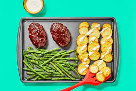

BBQ Meatloaf

Description
Savory meatloaf served with shingled potatoes and
roasted green beans.
Ingredients
- 12oz Russett potatoes
- 2 scallions
- 1 clove garlic
- 6oz green beans
- 1/4 cup panko breadcrumbs
- 10oz ground beef
- 1tbsp Sweet and Smokey BBQ Seasoning
- 1tsp chili powder
- 2tbsp sour cream
- 4tbsp BBQ sauce
Steps
- Preheat oven to 425 degrees. Slice potatoes into 1/4 inch
rounds.
- Trim and mince scallions. Seperate whites from greens.
Peel and mince garlic. Trim green beans if necessary.
- In a large bowl, toss potatoes with 2 tbsp oil and a couple
pinches of salt and pepper. Add potatoes to one side of baking
sheet in a single overlapping layer. Roast for 10 minutes on
top rack.
- In a small bowl, combine bbq sauce with 1/2 tsp chili powder.
Taste with salt. In a large bowl, soak panko with 2 tsp water.
Add scallio whites, garlic, bbq seasoning, 1/4 tsp chili
powder, 3/4 tsp salt and a pinch of pepper. Form into two
1-inch-tall loaves.
- Once potatoes have roasted 10 minutes, remove from oven.
Toss green beans on empty side with a drizzle of oil, salt
and pepper. Place meatloaves next to beans. Brush tops with
bbq glaze. Transfer to top rack and roast for 15 minutes.
- In a small bowl, mix sour cream with scallion greens to
taste. Season with salt and pepper. Stir in water 1 tsp at
a time until mixture is runny.
- Once meatloaves and green beans have roasted 15 minutes,
remove from oven. Brush again with bbq glaze. Return to oven
for 2-3 minutes more until glaze is tacky and beans tender.
- Divide and serve. Enjoy!